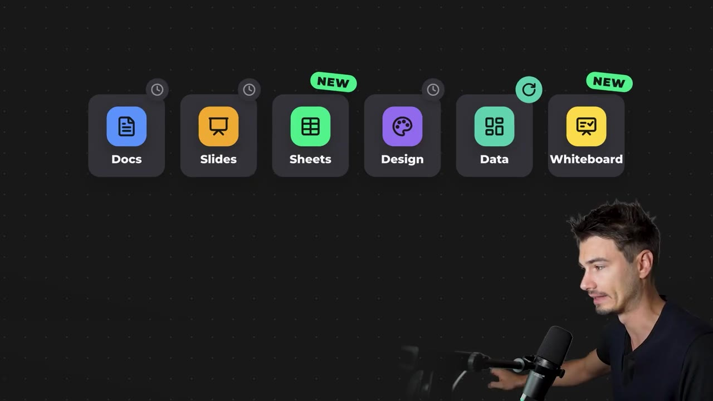
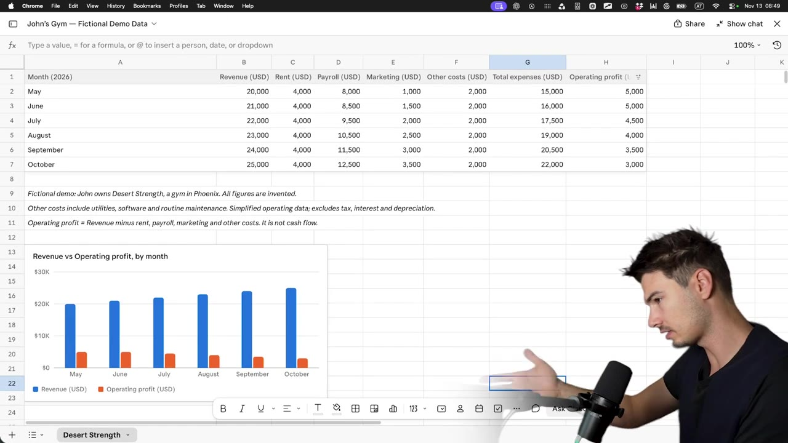
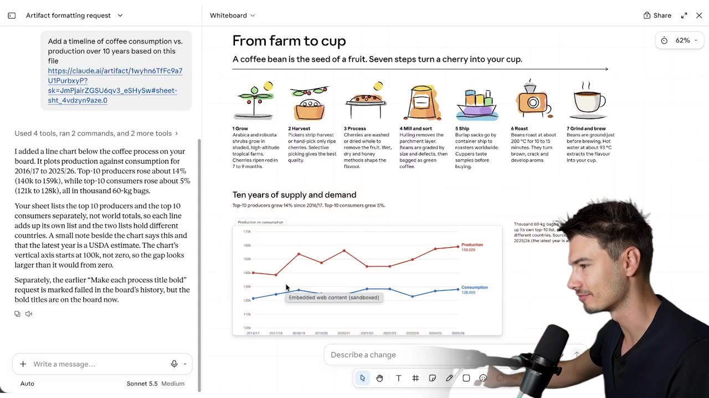
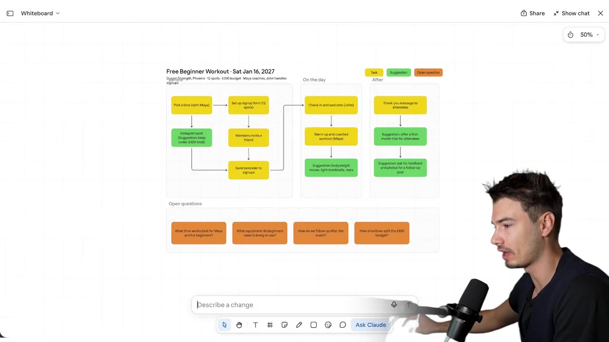
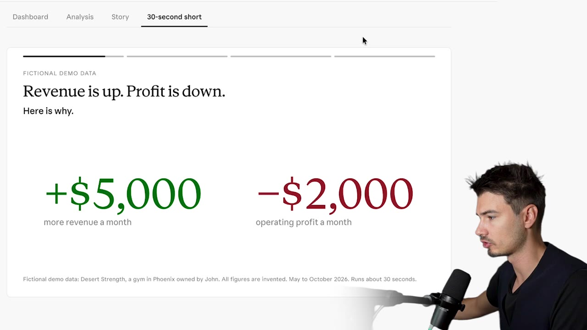
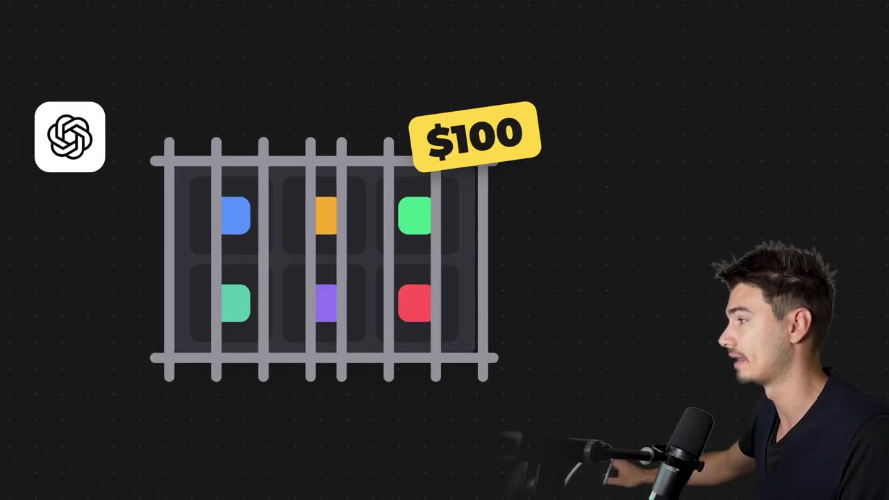

Claude’s New Whiteboards, Sheets & Data: What You Can Do Now.
▶ 원본 영상 보기한눈에 보기
- Claude 아티팩트에 Sheets와 Whiteboard가 새로 생겼고, 기존 Dashboards는 Data로 이름이 바뀌었으며, 모두 유료 플랜 전체에서 쓸 수 있다.
- Sheets는 피벗 테이블·매크로가 없고 공유도 불편해서, 진행자는 Google Sheets에서 갈아탈 이유를 못 찾았다.
- Whiteboard는 아이디어 구상·워크플로 배치·행사 기획에 쓸 만하다는 것이 영상의 가장 큰 결론이다.
- Data는 대시보드를 만든 뒤 같은 탭 안에 "집중 보기"(시각 스토리 슬라이드)를 덧붙일 수 있지만, 지시를 완벽히 따르지 않아 추가 요청이 필요했다.
- ChatGPT Spaces는 이미지 생성이 강점이지만 $100 플랜에서만 쓸 수 있고 화이트보드 기능이 없다.
이런 분께 도움이 됩니다
- Claude 유료 플랜 사용자 중 새 아티팩트(Sheets·Whiteboard·Data) 중 무엇을 업무에 쓸지 가리고 싶은 분.
- Google Sheets에서 Claude로 옮겨야 하는지 고민하는 분.
핵심 내용
새로 생긴 아티팩트와 이용 조건
- 아티팩트에서 만들 수 있는 것은 Docs, Slides, Sheets, Design(영상·그래픽도 가능), Data, Whiteboard이다. 이 중 Sheets와 Whiteboard가 신규, Data는 예전 Dashboards의 새 이름이다. (0:33)
- 이 기능들은 $100·$200 같은 고가 플랜에 묶이지 않고 모든 유료 플랜에서 쓸 수 있다. (0:00)
- 진행자의 요약: Whiteboard는 워크플로에 보탤 만하고, 나머지는 기존 도구의 복제에 가깝다.

Sheets: Google Sheets를 대체하기엔 약하다
- 화면과 사용법은 Google Sheets·Excel과 같고, 가져오기 버튼도 있다. 하지만 피벗 테이블, 동적 테이블, 매크로가 없고 기능 메뉴도 얕다. (1:36)
- 유일한 차별점은 AI가 쓰도록 설계된 인터페이스라는 점인데, 파일을 올리고 맥락 프롬프트를 주면 시트 안에서 Claude가 작업하고 옆에 사이드바가 열린다.
- Google Sheets에 Anthropic 공식 Claude 애드온을 깔고 같은 작업을 시켰더니 결과는 거의 같았다. 다만 Google 쪽은 바로 작업하지 않고 계획부터 세웠다. (3:18)
- 공유는 큰 약점이다. Google 계정은 누구나 있지만, 여기서는 상대를 Claude 계정에 초대하거나 공용 계정 또는 공개 설정이 필요하다.
- 테스트 시나리오: 가상의 애리조나 피닉스 헬스장 "Desert Strength"의 6개월 매출·지출 시트. (2:43)
- 커넥터를 연결하면 Claude에서 Google 시트 안을 직접 작업할 수도 있다.
💡 Sheets의 장점은 "AI 전용 화면"뿐이고, 공유·기능 깊이는 Google Sheets가 앞선다.

Whiteboard: 아이디어를 시각으로 펼치는 도구
- AI가 화이트보드 위에 구조를 직접 배치한다. 글 덩어리보다 시각·상호작용 요소가 이해에 낫다는 흐름의 연장이다. (4:14)
- 테스트: 같은 헬스장이 프로모션 예산 $300으로 무료 초보자 운동 프로그램을 열 때, 팀에 공유할 행사 기획 보드를 만들었다. 옆에 체크리스트가 붙은 이벤트 흐름이 나왔다. (5:09)
- Miro·Whimsical 같은 도구가 있지만 진행자는 AI에게 이런 도구를 조종시킨 적이 없다. 이미 같은 화면에 있으니 앞으로 써 보겠다고 한다.
- 추가 예시: 커피콩이 농장에서 컵까지 가는 여정 보드. 스타일 변경이나 차트 추가를 한 번에 요청할 수 있다. (6:52)

- 이벤트 메모를 편집 가능한 보드로 바꾼 뒤 프로모션 예산이 바뀌었다고 말하면 보드 전체가 갱신된다.
- 슬라이드에 가두지 않는 자유로운 방식이라 구상 단계용이고, 발표·피치의 백업 자료로도 쓰고 싶다고 한다.

Data(구 Dashboards): 기본 보드 + 집중 보기
- 데이터를 넣으면 대시보드가 만들어지고, 품질은 Claude가 원래 최상급이던 영역 그대로다. 배경에 표준 프리셋이 있어 빠르다. (7:32)
- 새로 보이는 활용: 대시보드를 만든 뒤 15초짜리 시각 스토리(설명용 슬라이드) 를 같은 대시보드의 새 탭으로 추가한다. 큰 대시보드 + 특정 측면에 초점을 맞춘 보기 구조다.
- 예전에도 프롬프트로 웹사이트 하위 메뉴를 만들면 가능했지만, 이제는 빠르고 직관적이다.
- 한계: 매출 공백을 설명하는 스토리텔러 보기에서 지시를 완벽히 따르지 않아 추가 요청으로 채워야 했다. Claude에게는 드문 일이라고 한다. (8:52)
💡 매번 완벽하지 않으니 자연어로 고쳐 달라고 하는 전제로 쓰면 된다.

ChatGPT Spaces와 비교
| 항목 | Claude | ChatGPT Spaces |
|---|---|---|
| 이용 플랜 | 모든 유료 플랜 | 현재 $100 플랜만 |
| 문서·슬라이드 | 지원 | 페이지, 슬라이드 지원 |
| 이미지 생성 | 자체 생성 없음(Hix Field·Fal AI API 같은 커넥터로 외부 모델 연결 필요) | 자체 이미지 생성(실사·본인 얼굴 포함) |
| 시각 작업 | Claude Design, 영상은 Fable 5.2에서 특히 강하다고 평가 | - |
| 화이트보드 | 있음 | 없음 |

- 진행자의 판단: 접근성 때문에 이번 주는 Claude 사용자에게 좋은 주다. (9:20)
진행자의 기능별 결론
| 기능 | 판단 |
|---|---|
| Sheets | 갈아탈 이유 없음. 간단한 작업은 조금 빠를 수 있음 |
| Whiteboard | 가장 유용. 아이디어 탐색, 대안 비교, 워크플로·앱 기능 계획의 "지도"로 활용 |
| Data | 대시보드 제작에 좋음 |
이번 주 다른 소식
따라 해보기
준비물
- Claude 유료 플랜 계정(플랜 종류는 영상에서 "모든 유료 플랜"이라고만 함). 소요 시간은 몇 분.
단계별 방법
🔁 Claude 화이트보드로 기획 보드 만들기
- 아티팩트 열기
- 화이트보드 선택
- Ask Claude 요청
- 수정 요청
따라 할 수 있는지 점검
- ✅ 바로 따라 할 수 있음: 아티팩트에서 Whiteboard를 열고 요청해 결과를 수정하는 흐름.
- ⚠️ 3단계 「Ask Claude 요청」: 프롬프트 원문이 영상에 나오지 않음 → 영상 5:03~5:36 화면에서 입력 문장을 확인하거나, 위 예시 문장을 바탕으로 직접 작성.
- ⚠️ 준비물 「플랜」: 어떤 유료 플랜부터 되는지 정확한 이름이 안 나옴 → Claude 공식 사이트의 플랜 안내에서 확인(보충).
확인 방법
- 요청 후 보드에 항목이 배치되고, 예산 같은 값을 바꿔 말했을 때 전체가 함께 갱신되면 제대로 된 것이다.
막히면
- 영상은 Data 쪽에서 지시를 놓치는 경우가 있다고 했으므로, 화이트보드도 결과가 어긋나면 추가 요청으로 보완한다(Data 사례에서 유추).
기억할 숫자·인용
- 프로모션 예산 $300, Dots 사용자 지정 지침 최대 35,000자.
- ChatGPT Spaces는 $100 플랜 한정, Claude의 새 기능은 모든 유료 플랜.
- "Whiteboard is genuinely interesting" — 진행자가 이번 업데이트에서 가장 높게 꼽은 기능.
생각해볼 점
- Sheets 비교는 진행자의 짧은 테스트(가상 헬스장 데이터) 기준이다. 대용량·복잡한 데이터에서도 같을지는 확인이 필요하다.
- 진행자는 Google Sheets 중심으로 일하는 사용자라 평가가 그쪽에 기운다. 협업 환경이 다르면 판단도 달라질 수 있다.
- ChatGPT Business의 "등록 업체 우선 추천"은 진행자의 추측이지 확인된 사실이 아니다.
바로 해볼 일
- Claude 아티팩트에서 Whiteboard를 열어 이번 주 계획이나 진행 중인 기획 하나를 올려 보기
- 쓰던 스프레드시트가 피벗 테이블·매크로를 쓰는지 확인해 Sheets 이전 필요 여부 판단하기
- 사업체를 운영한다면 ChatGPT Business 등록 방법을 영상 설명란 링크로 살펴보기